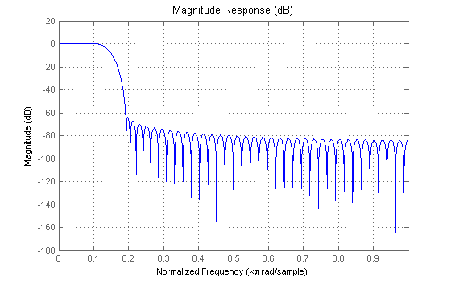
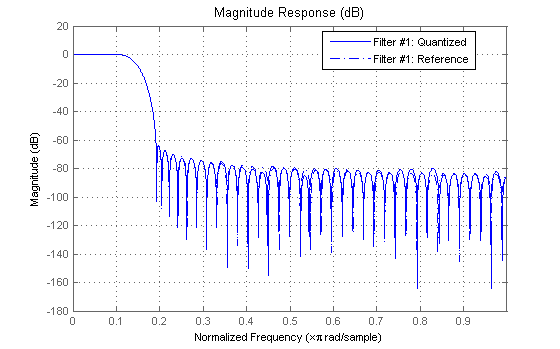
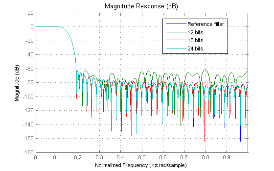
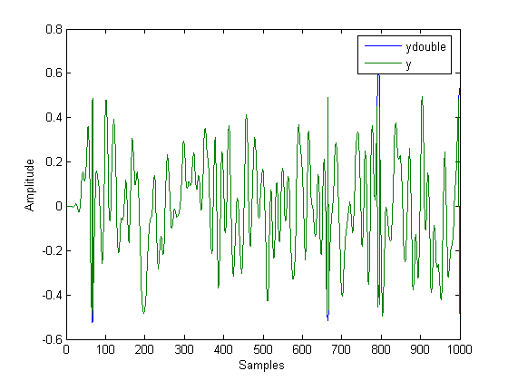

This demonstration illustrates various aspects of working with FIR filters implemented with the direct-form structure using fixed-point arithmetic.
See also gsfixedxptdemo.m
The FIR filter to use is not critical. Since we will use the direct-form structure, it doesn't even need to have linear phase. For this demonstration we will use a simple least-squares design to obtain the filter coefficients.
b = firls(80,[0 0.11 0.19 1],[1 1 0 0],[1 100]);
hfvt = fvtool(b);
set(hfvt, 'Color', [1 1 1]);
 To create the fixed-point direct-form FIR filter using the coefficients we have is a simple two-step process.
h = dfilt.dffir(b); set(h,'Arithmetic','fixed');
There are several parameters for a fixed-point direct-form FIR filter. To start with, it is best to concentrate on the coefficient wordlength and fractionlength (scaling). First we use the Filter Visualization Tool to compare the quantized coefficients to the nonquantized (reference) coefficients.
set(hfvt, 'Filters', h, 'legend','on');
To determine the number of bits being used in the fixed-point filter, we simply look at the CoeffWordlength. To determine how they are being scaled, we can look at the CoeffAutoScale state.
get(h,'CoeffWordLength')
ans =
16
get(h,'NumFracLength')
ans =
17
This tells us that 16 bits are being used to represent the coefficients, and the least-significant bit (LSB) is weighed by 2^(-17). 16 bits is just the default number used for coefficients, but the 2^(-17) weight has been computed automatically to represent the coefficients with the best precision possible. This is controlled through the 'CoeffAutoScale' property. This property can be set to false if manual control of the coefficient scaling is desired. We simply verify that auto scaling is enabled here:
get(h,'CoeffAutoScale') % Returns a logical true
ans =
1
We can make several copies of the filter to try different wordlengths. Allowing the coefficient auto scaling to determine the best precision in each case.
h1 = copy(h); set(h1,'CoeffWordLength',12); % Use 12 bits h2 = copy(h); set(h2,'CoeffWordLength',24); % Use 24 bits href = reffilter(h); set(hfvt, 'Filters', [href, h1, h, h2]); set(hfvt,'ShowReference','off'); % Reference already displayed once legend(hfvt,'Reference filter','12 bits','16 bits','24 bits');
12 bits are clearly not enough to faithfully represent this filter. 16 bits may be enough for most applications, so we will continue to use 16 bits in this demonstration. As a rule-of-thumb, one should expect an attainable attenuation of about 5 dB per bit.
Our main purpose is to evaluate the accuracy of the fixed-point filter when compared to a double-precision floating point version. We will see that it is not sufficient to have a faithful representation of the coefficients that keep the magnitude response approximately the same.
Since we just want to evaluate accuracy, we will use some random data to filter and compare against. We will create a quantizer, with a range of [-1,1) to generate random uniformly distributed white-noise data using 16 bits of wordlength.
rand('state',0); % Make results reproducible by initializing the random generator q = quantizer([16,15],'RoundMode','round'); xq = randquant(q,1000,1); % 1000 Data points in the range [-1,1) xin = fi(xq,true,16,15);
When evaluating accuracy of fixed-point filtering, there are three quantities to consider:
1. The "ideal" output, this quantity is what we would like to compute. It is computed using the reference coefficients and double-precision floating-point arithmetic.
2. The best we can hope for, this is the best we can hope to achieve. It is computed using the quantized coefficients and double-precision floating-point arithmetic.
3. What we can actually compute, this is the output computed using the quantized coefficients and fixed-point arithmetic.
Clearly we want to compare what we can actually compute to the best we can hope for. This last quantity can be computed by casting the fixed-point filter to double and filtering with double-precision floating-point arithmetic.
xdouble = double(xin); hdouble = double(h); ydouble = filter(hdouble,xdouble);
For completeness we show how to compute the "ideal" output. And how much the effect of solely quantizing the coefficients affects the output of the filter.
yideal = filter(href,xdouble);
norm(yideal-ydouble) % total error
ans = 3.4886e-004
norm(yideal-ydouble,inf) % max deviation
ans = 3.7219e-005
Next we will perform the actual fixed-point filtering. Once again, the best we can hope to achieve is to have an output identical to ydouble.
y = filter(h,xin);
norm(double(y)-ydouble) % total error
ans =
0.0178
norm(double(y)-ydouble,inf) % max deviation
ans = 9.7186e-004
At first glance, the output may seem reasonably close to the best we can hope for. Certainly by plotting y and ydouble there is hardly any visual difference (it is necessary to zoom-in to notice any difference).
plot([ydouble,double(y)]) xlabel('Samples'); ylabel('Amplitude') legend('ydouble','y') set(gcf, 'Color', [1 1 1])
The question is, can we improve the output accuracy. To address this, we first examine the output to determine the necessary range to represent it.
norm(double(y),inf) % Maximum absolute value of y
ans =
0.6426
Next we examine the output settings.
get(h,'OutputWordLength')
ans =
16
get(h,'OutputFracLength')
ans =
9
This tells us that 16 bits are being used to represent the output and that the LSB is weighed by 2^(-9). These settings are able to cover the range [-64, 64), which is way too large for the maximum absolute value of the output. The price to pay is reduced precision. The issue has to do with the output mode:
get(h,'OutputMode')
ans = AvoidOverflow
The avoid overflow setting is a very conservative, worst-case scenario, setting. It is there to avoid overflows regardless of the input signal and regardless of the actual value of the filter coefficients. A more accurate setting is best precision. This accommodates to each input signal and determines the best precision possible on a case by case basis.
set(h,'OutputMode', 'BestPrecision'); y = filter(h,xin); get(h,'OutputFracLength')
ans =
15
norm(double(y)-ydouble) % total error
ans = 2.7623e-004
norm(double(y)-ydouble,inf) % max deviation
ans = 1.5251e-005
With these settings, the total and maximum errors have diminished significantly. We are still using 16 bits to represent the output, but the scaling has been improved to obtain the improved precision.
To isolate any other quantization errors being introduced in the filter, we can eliminate quantization error at the output completely by setting the output to have the same specifications as the accumulator. This can be thought of as being able to "look inside" the accumulator:
set(h,'OutputMode','SpecifyPrecision'); set(h,'OutputWordLength',get(h,'AccumWordLength')); set(h,'OutputFracLength',get(h,'AccumFracLength')); y = filter(h,xin); norm(double(y)-ydouble) % total error
ans =
0
norm(double(y)-ydouble,inf) % max deviation
ans =
0
The errors are exactly zero, showing that no further quantization is being introduced in the accumulator. The products are set by default to full precision, so we know that no errors are occurring there.
Of course, it is usually not possible to have a full 40-bit output of the filter, so that some difference between y and ydouble is expected. Nevertheless, we have verified that the difference in this case is due solely to output quantization (this is not always the case, bits may be lost in the accumulator in some cases - in fact overflow may occur).
If compare the product settings, with the accumulator settings:
get(h,'ProductWordLength')
ans =
32
get(h,'ProductFracLength')
ans =
32
get(h,'AccumWordLength')
ans =
40
get(h,'AccumFracLength')
ans =
32
We notice that the accumulator has 8 extra bits available. This is typical of most fixed-point DSP processors. These bits are usually referred to as guard bits. They provide a safety net for intermediate overflows. The easiest way of appreciating their value is to remove them and see what happens (we adjust the output setting accordingly),
set(h,'AccumMode','SpecifyPrecision'); set(h,'AccumWordLength',get(h,'ProductWordLength')); set(h,'OutputWordLength',get(h,'AccumWordLength')); y = filter(h,xin); norm(double(y)-ydouble) % total error
ans =
3.4641
norm(double(y)-ydouble,inf) % max deviation
ans =
1
plot([ydouble,double(y)]) xlabel('Samples'); ylabel('Amplitude') legend('ydouble','y') set(gcf, 'Color', [1 1 1])
The error is large now, because overflow occurred as can be seen in the plot. Notice that we still have the output settings equal to the accumulator settings. So the overflow is occurring in the accumulator itself.
It is possible to not have overflow even if guard bits are not available. The easiest way to do this is to use the keep the most-significant bit (MSB) setting for the accumulator
set(h,'AccumMode','KeepMSB'); set(h,'OutputFracLength',get(h,'AccumFracLength')); y = filter(h,xin); norm(double(y)-ydouble) % total error
ans = 2.4442e-006
norm(double(y)-ydouble,inf) % max deviation
ans = 2.5332e-007
But this is a conservative mode, once again for any input. The error seems small because there is no output quantization error in this case. If we use 16 bits for the output, the error is much larger.
set(h,'OutputWordLength',16); set(h,'OutputMode','BestPrecision'); y = filter(h,xin); norm(double(y)-ydouble) % total error
ans = 2.7627e-004
norm(double(y)-ydouble,inf) % max deviation
ans = 1.5400e-005
From the plots of y and ydouble, it was clear that one extra bit was all that was required in this specific case to avoid overflow. We can improve the results slightly with this setting, but this is specific to the current filter coefficients and input signal.
set(h,'AccumMode','SpecifyPrecision'); set(h,'AccumFracLength',31); y = filter(h,xin); norm(double(y)-ydouble) % total error
ans = 2.7623e-004
norm(double(y)-ydouble,inf) % max deviation
ans = 1.5251e-005
The errors are the same as when we used 40 bits for the accumulator and 2^(-32) to scale the LSB. This indicates that the errors are due solely to quantization between the accumulator and the output.